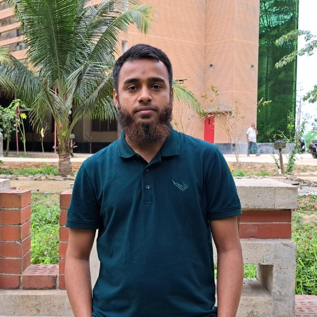

Hi There 👋, I'm
I'm a software engineering educator and researcher with over two years of professional DevOps experience. Currently, I work as a Lecturer at Shahjalal University of Science and Technology, Sylhet
I hold a Bachelor's degree in Software Engineering from Shahjalal University of Science and Technology, Sylhet
My professional experience includes extensive work in DevOps engineering at Vivasoft Limited, working with cutting-edge cloud technologies including AWS, Kubernetes, Docker, and Terraform.
I am passionate about research in AI for software engineering. and AI for DevOps
Courses I'm passionate about teaching at Shahjalal University of Science and Technology
Exploring modern cloud architectures, containerization, and infrastructure as code. Students learn AWS services, Kubernetes orchestration, Docker containers, and best practices for deploying scalable applications in production environments.
Covering Agile methodologies, CI/CD pipelines, and DevOps practices. Students gain hands-on experience with version control, automated testing, deployment automation, and modern project management techniques used in the software industry.
Examining network protocols, architecture, and cloud networking. Topics include TCP/IP, DNS, HTTP/HTTPS, load balancing, VPC design, and network security in distributed systems. Practical labs reinforce theoretical concepts.
Introducing fundamental programming concepts using C. Building strong foundations in algorithms, data structures, memory management, and systematic problem-solving approaches that are essential for all software engineering students.
Teaching Python for automation, data analysis, web development, and scripting. Students learn to leverage Python's extensive ecosystem including pandas, NumPy, and popular frameworks for building real-world applications.
Covering mathematical foundations essential for computer science. Topics include logic, set theory, graph theory, combinatorics, and mathematical reasoning that underpin algorithms and computational thinking.
I believe in bridging the gap between academic theory and industry practice. My courses emphasize hands-on projects, real-world case studies, and practical skills that students can immediately apply in their careers. I encourage curiosity, critical thinking, and collaborative learning to prepare students for the rapidly evolving tech landscape.
Sylhet, Bangladesh
Sylhet, Bangladesh
Banani, Dhaka
Banani, Dhaka
Banani, Dhaka
Code Refactoring
Demonstrating the feasibility of using small, distilled LLMs for critical software engineering tasks such as program repair and bug detection. Combining real datasets with synthetic, teacher-generated data to bridge the gap between accuracy and efficiency.
Code Quality Analysis
Studying how LLMs are creating technical debt by analyzing the quality of LLM-generated code and comparing it with handwritten code. Understanding the implications for software maintenance and long-term code quality.
A comprehensive website for maintaining Software Engineering Society operations, including alumni management, photo blog, and member information system.
Client-server model file sharing system with socket-based communication. Supports file upload, download, and deletion operations.
Full-featured 8 Ball pool game developed from scratch using LibGdx graphics library with realistic physics and smooth gameplay.
I'm always open to discussing research collaborations, teaching opportunities, or DevOps projects. Feel free to reach out!
Sylhet, Bangladesh